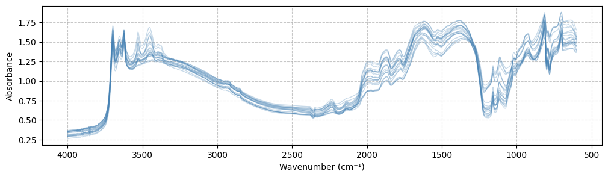

# Import the package
from soilspecdata.datasets.ossl import get_osslSoilSpecData
A Python package for handling soil spectroscopy data, with a focus on the Open Soil Spectral Library (OSSL).
Installation
pip install -U soilspecdataThe -U flag is used to update the package to the latest version. This is important to ensure that you have the latest features and bug fixes.
If you want to install the development version, run in the project root:
pip install -e .[dev]Features
- Easy loading and handling of OSSL dataset
- Support for both VISNIR (Visible Near-Infrared) and MIR (Mid-Infrared) spectral data
- Flexible wavenumber range filtering
- Convenient access to soil properties and metadata
- Automatic caching of downloaded data
- Get aligned spectra and target variable(s)
- Further datasets to come …
Quick Start
Load OSSL dataset
ossl = get_ossl()The spectral analysis covers both MIR (400-4000 cm⁻¹) and VISNIR (4000-28571 cm⁻¹) regions, with data reported in increasing wavenumbers for consistency across the entire spectral range.
Ranges of interest can further be filtered using the wmin and wmax parameters in the get_mir and get_visnir methods.
MIR spectra
mir_data = ossl.get_mir()VISNIR spectra
Using custom wavenumber range:
visnir_data = ossl.get_visnir(wmin=4000, wmax=25000)VISNIR | MIR dataclass member variables
print(visnir_data)SpectraData attributes:
----------------------
Available attributes: wavenumbers, spectra, measurement_type, sample_ids
Wavenumbers:
-----------
[4000, 4003, 4006, 4009, 4012, 4016, 4019, 4022, 4025, 4029]
Shape: (1051,)
Spectra:
-------
[[0.3859, 0.3819, 0.3792, 0.3776, 0.3769],
[0.3429, 0.3419, 0.3414, 0.3413, 0.3415],
[0.3425, 0.3384, 0.3354, 0.3334, 0.3323],
[0.2745, 0.2754, 0.2759, 0.2761, 0.276 ],
[0.285 , 0.2794, 0.2755, 0.273 , 0.2718]]
Shape: (64644, 1051)
Measurement type (Reflectance or Absorbance):
--------------------------------------------
ref
Sample IDs:
----------
['FS15R_FS4068', 'FS15R_FS4069', 'FS15R_FS4070', 'FS15R_FS4071',
'FS15R_FS4072', 'FS15R_FS4073', 'FS15R_FS4074', 'FS15R_FS4075',
'FS15R_FS4076', 'FS15R_FS4077']
Total samples: 64644Getting soil properties and other metadata
Example: get Cation Exchange Capacity (CEC) measurements (in cmolc/kg) for all samples. Results are returned as a pd.DataFrame indexed by sample ID (id):
properties = ossl.get_properties(['cec_usda.a723_cmolc.kg'], require_complete=True)properties.head()| cec_usda.a723_cmolc.kg | |
|---|---|
| id | |
| S40857 | 6.633217 |
| S40858 | 3.822628 |
| S40859 | 3.427324 |
| S40860 | 1.906545 |
| S40861 | 13.403203 |
Note
require_complete=True ensures that only non null values are returned in selected columns (here cec_usda.a723_cmolc.kg).
For more details on the OSSL dataset and its variables, see the OSSL documentation. Any column name part of the ossl.properties_cols list can be used as a target or metadata variable.
ossl.properties_cols['dataset.code_ascii_txt',
'id.layer_local_c',
'id.layer_uuid_txt',
'id.project_ascii_txt',
'id.location_olc_txt',
'id.dataset.site_ascii_txt',
'id.scan_local_c',
'longitude.point_wgs84_dd',
'latitude.point_wgs84_dd',
'layer.sequence_usda_uint16',
'layer.upper.depth_usda_cm',
'layer.lower.depth_usda_cm',
'observation.date.begin_iso.8601_yyyy.mm.dd',
'observation.date.end_iso.8601_yyyy.mm.dd',
'surveyor.title_utf8_txt',
'layer.texture_usda_txt',
'pedon.taxa_usda_txt',
'horizon.designation_usda_txt',
'longitude.county_wgs84_dd',
'latitude.county_wgs84_dd',
'location.point.error_any_m',
'location.country_iso.3166_txt',
'observation.ogc.schema.title_ogc_txt',
'observation.ogc.schema_idn_url',
'surveyor.contact_ietf_email',
'surveyor.address_utf8_txt',
'dataset.title_utf8_txt',
'dataset.owner_utf8_txt',
'dataset.address_idn_url',
'dataset.doi_idf_url',
'dataset.license.title_ascii_txt',
'dataset.license.address_idn_url',
'dataset.contact.name_utf8_txt',
'dataset.contact_ietf_email',
'acidity_usda.a795_cmolc.kg',
'aggstb_usda.a1_w.pct',
'al.dith_usda.a65_w.pct',
'al.ext_aquaregia_g.kg',
'al.ext_usda.a1056_mg.kg',
'al.ext_usda.a69_cmolc.kg',
'al.ox_usda.a59_w.pct',
'awc.33.1500kPa_usda.c80_w.frac',
'b.ext_mel3_mg.kg',
'bd_iso.11272_g.cm3',
'bd_usda.a21_g.cm3',
'bd_usda.a4_g.cm3',
'c.tot_iso.10694_w.pct',
'c.tot_usda.a622_w.pct',
'ca.ext_aquaregia_mg.kg',
'ca.ext_usda.a1059_mg.kg',
'ca.ext_usda.a722_cmolc.kg',
'caco3_iso.10693_w.pct',
'caco3_usda.a54_w.pct',
'cec_iso.11260_cmolc.kg',
'cec_usda.a723_cmolc.kg',
'cf_iso.11464_w.pct',
'cf_usda.c236_w.pct',
'clay.tot_iso.11277_w.pct',
'clay.tot_usda.a334_w.pct',
'cu.ext_usda.a1063_mg.kg',
'ec_iso.11265_ds.m',
'ec_usda.a364_ds.m',
'efferv_usda.a479_class',
'fe.dith_usda.a66_w.pct',
'fe.ext_aquaregia_g.kg',
'fe.ext_usda.a1064_mg.kg',
'fe.ox_usda.a60_w.pct',
'file_sequence',
'k.ext_aquaregia_mg.kg',
'k.ext_usda.a1065_mg.kg',
'k.ext_usda.a725_cmolc.kg',
'mg.ext_aquaregia_mg.kg',
'mg.ext_usda.a1066_mg.kg',
'mg.ext_usda.a724_cmolc.kg',
'mn.ext_aquaregia_mg.kg',
'mn.ext_usda.a1067_mg.kg',
'mn.ext_usda.a70_mg.kg',
'n.tot_iso.11261_w.pct',
'n.tot_iso.13878_w.pct',
'n.tot_usda.a623_w.pct',
'na.ext_aquaregia_mg.kg',
'na.ext_usda.a1068_mg.kg',
'na.ext_usda.a726_cmolc.kg',
'oc_iso.10694_w.pct',
'oc_usda.c1059_w.pct',
'oc_usda.c729_w.pct',
'p.ext_aquaregia_mg.kg',
'p.ext_iso.11263_mg.kg',
'p.ext_usda.a1070_mg.kg',
'p.ext_usda.a270_mg.kg',
'p.ext_usda.a274_mg.kg',
'p.ext_usda.a652_mg.kg',
'ph.cacl2_iso.10390_index',
'ph.cacl2_usda.a477_index',
'ph.cacl2_usda.a481_index',
'ph.h2o_iso.10390_index',
'ph.h2o_usda.a268_index',
's.ext_mel3_mg.kg',
's.tot_usda.a624_w.pct',
'sand.tot_iso.11277_w.pct',
'sand.tot_usda.c405_w.pct',
'sand.tot_usda.c60_w.pct',
'silt.tot_iso.11277_w.pct',
'silt.tot_usda.c407_w.pct',
'silt.tot_usda.c62_w.pct',
'wr.10kPa_usda.a414_w.pct',
'wr.10kPa_usda.a8_w.pct',
'wr.1500kPa_usda.a417_w.pct',
'wr.33kPa_usda.a415_w.pct',
'wr.33kPa_usda.a9_w.pct',
'zn.ext_usda.a1073_mg.kg',
'scan.mir.date.begin_iso.8601_yyyy.mm.dd',
'scan.mir.date.end_iso.8601_yyyy.mm.dd',
'scan.mir.model.name_utf8_txt',
'scan.mir.model.code_any_txt',
'scan.mir.method.optics_any_txt',
'scan.mir.method.preparation_any_txt',
'scan.mir.license.title_ascii_txt',
'scan.mir.license.address_idn_url',
'scan.mir.doi_idf_url',
'scan.mir.contact.name_utf8_txt',
'scan.mir.contact.email_ietf_txt',
'scan.visnir.date.begin_iso.8601_yyyy.mm.dd',
'scan.visnir.date.end_iso.8601_yyyy.mm.dd',
'scan.visnir.model.name_utf8_txt',
'scan.visnir.model.code_any_txt',
'scan.visnir.method.optics_any_txt',
'scan.visnir.method.preparation_any_txt',
'scan.visnir.license.title_ascii_txt',
'scan.visnir.license.address_idn_url',
'scan.visnir.doi_idf_url',
'scan.visnir.contact.name_utf8_txt',
'scan.visnir.contact.email_ietf_txt']- Get metadata (e.g., geographical coordinates):
metadata = ossl.get_properties(['longitude.point_wgs84_dd', 'latitude.point_wgs84_dd'], require_complete=False)Preparing data for machine learning pipeline
To get directly aligned spectra and target variable(s):
X, y, ids = ossl.get_aligned_data(
spectra_data=mir_data,
target_cols='cec_usda.a723_cmolc.kg'
)
X.shape, y.shape, ids.shape((57064, 1701), (57064, 1), (57064,))And plot the first 20 MIR spectra:
from matplotlib import pyplot as plt
plt.figure(figsize=(12, 3))
plt.plot(mir_data.wavenumbers, mir_data.spectra[:20,:].T, alpha=0.3, color='steelblue', lw=1)
plt.gca().invert_xaxis()
plt.grid(True, linestyle='--', alpha=0.7)
plt.xlabel('Wavenumber (cm⁻¹)')
plt.ylabel('Absorbance');
Data Structure
The package returns spectra data in a structured format containing:
- Wavenumbers
- Spectra measurements
- Measurement type (reflectance/absorbance)
- Sample IDs
Properties and metadata are returned as pandas DataFrames indexed by sample ID.
Cache Management
By default, the OSSL dataset is cached in ~/.soilspecdata/. To force a fresh download:
ossl = get_ossl(force_download=True)Contributing
Contributions are welcome! Please feel free to submit a Pull Request.
License
Apache2
Citation(s)
- OSSL Library: Safanelli, J.L., Hengl, T., Parente, L.L., Minarik, R., Bloom, D.E., Todd-Brown, K., Gholizadeh, A., Mendes, W. de S., Sanderman, J., 2025. Open Soil Spectral Library (OSSL): Building reproducible soil calibration models through open development and community engagement. PLOS ONE 20, e0296545. https://doi.org/10.1371/journal.pone.0296545